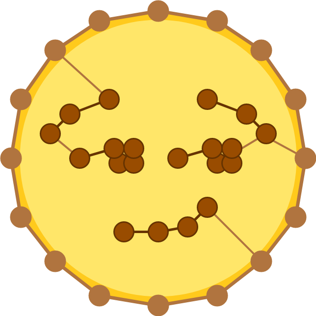
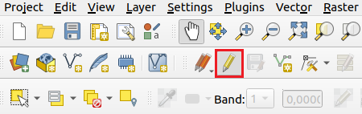

Welcome to the S.P.A.N.N.E.R.S.-Plugin-Documentation!

We provide a possibility to connect the (open-source) geographic information system QGIS with the open graph drawing framework OGDF.
Graph algorithm engineers can embed new graph algorithms in the OGDF and test them on real life instances extracted from map data. QGIS enthusiasts can also browse through a range of efficient algorithms already provided in the OGDF and perform various tasks with them.
With our plugin, you can also perform customisable experiments and automatically visualise the results in a scientific manner. If you want to use the S.P.A.N.N.E.R.S.-Plugin you can either enjoy the easy installation process with our docker image or you can follow our installation guide by manually installing the individual components.
When you're all set, you can start with the Beginner's Guide. Later on, you can also check out our guide for Advanced Applications.
Good luck and have fun! 😏
Setup ↵
Using Docker
Work In Progress
Using Git
Work In Progress
Ended: Setup
Beginner's Guide ↵
User Interface
The user interface consists of different windows that provide various functions, such as creating or editing graphs. All functions of the plugin are available through the user interface.
The section Open Plugin Main Window shows how to open the main window of the plugin and the window of the graph layer. After you know how to open the windows, the components of the main window will be presented in the section Plugin Window Overview. For more information on the graph layer, see the chapter on graph layers.
Open Plugin Main Window
The main window looks like this:
and can be opened in two different ways:
Menu Bar
In the menu bar, the window can be opened under Plugins -> OGDF Plugin. The menu item has several entries that correspond to the tabs presented in the section Plugin Window Overview.
Plugin Toolbar
Another possibility to open the window is through the plugin toolbar by clicking on the plugin logo or on the arrow next to the logo to directly open a selected tab.
Both options are highlighted in the image below:
Open Graph Layer Window
The following Graph Layer Window can be accessed by simply double-clicking on the desired layer in the layers panel. Alternatively, the window can be opened by right-clicking on the layer in the layers panel and selecting the menu entry properties....

Plugin Window Overview
The main window provides a navigation on the left hand side. There are multiple tabs inserted which will all be described separately in the following paragraphs. You can navigate to the content of a tab by simply clicking on the desired tab.
Create From Resource Tab
On the Create from resource tab, which is directly chosen when you open the plugin (see the image above), you can load a layer from a predefined data set into the QGIS canvas. This can be done by selecting a data set from the drop-down list and then selecting a storage location of the layer. By clicking the Create button, the predefined data set will be created in the selected location and loaded as a layer to be rendered in QGIS. The predefined data sets contain various real open data vector and raster data for testing purposes and are described in the following.
- airports: The airports data set contains 3187 large and medium airports around the world represented by point features. Each airport has information about codenames, elevation, frequency, runways and wikipedia links. This data set is in the public domain and can be used, for example, to create a graph from this point layer. More details concerning this data set can be found under this link.
- berlin elevation: The berlin elevation data set contains a digital elevation model of Berlin. The data is stored in the Tag Image File Format (TIFF) and is licensed under the Open Data Commons Open Database License (ODbL). It can be used to build cost functions. More details concerning this data set can be found under this link.
- berlin environmental zone: This data set provides one polygon of the environmental zone of Berlin. The data is licensed under Data licence Germany – attribution – Version 2.0 and can be used, for example, in cost functions of weighted graphs or to simulate forbidden area. More details concerning this data set under this link.
- berlin streets: This data set offers a detailed street network of Berlin represented by a line layer with 42568 streets. The streets contain various information such as street name and type. The data is licensed under Data licence Germany – attribution – Version 2.0 and can be used, for example, to create a graph from this line layer. More details concerning this data set can be found under this link.
- brandenburg nature reserves: The brandenburg nature reserves data set consists of 621 polygons representing nature reserves in Brandenburg. The data is licensed under Data licence Germany – attribution – Version 2.0 and can be used, for example, in cost functions or to simulate forbidden area. More details concerning this data set can be found under this link.
- brandenburg water conservation areas: This data set includes 2040 water conservation areas represented as polygon layers. The data is licensed under Data licence Germany – attribution – Version 2.0 and can be used, for example, in cost functions of weighted graphs. More details concerning this data set can be found under this link.
Create Graph Tab
The Create graph tab shown below allows to create graphs from one input layer or a .graphml file. Since there exist many input options, the creation of the graph is more complex and is explained in detail in the Graph Builder section.
The contents of the tab are split into different tabs that provide various functions. The Parameters tab contains all the input fields for creating a graph, which is created after clicking the Create button. The Graph Tasks tab displays a table that lists information about all running and completed graph creation processes and allows to cancel a process. Also, it is possible to create at most three graphs simultaneously in the background by clicking the create graph button several times. The Log tab outputs logging information in a text browser.
OGDF Analysis Tab
After you have created a graph, you can send it to the OGDF server for analysis in the OGDF analysis tab and fetch the result of the analysis in the OGDF jobs tab. As you can see below, the view has two tabs.
On the Parameters tab you can specify the analysis and the corresponding analysis parameters. The Log tab provides logging information. After clicking the Run job button, your data will be sent to the server, where the analysis will be performed. As explained in the chapter on generating your own handlers, analyses can be added. The following analyses are provided by default:
- Greedy Spanner: The greedy spanner analysis calculates a -spanner of a given graph using the basic greedy -spanner algorithm by Althöfer et al., 2007. The multiplicative spanner is constructed by greedily adding edges. The algorithm takes an undirected weighted graph, its edge costs and a stretch factor for the multiplicative distortion function as input.
- Berman Spanner: The Berman spanner analysis calculates a -spanner with an approximation ratio of based on Berman et. al., 2013. The analysis takes a simple connected graph, the edge costs of the graph and a stretch factor for the multiplicative distortion function as input.
- Convex Hull: This analysis determines the convex hull of the selected graph and delivers the convex hull as a graph.
- Dijkstra: The Dijkstra analysis performs Dijkstra's single source shortest path algorithm on the given graph. The analysis takes a graph with positive edge weights, the graph's edge costs and a start node as input. The resulting graph contains all shortest paths starting from the start node.
- Todo: Add new ones ...
Benchmarks Tab
The Benchmark System gives you the possibility to execute experiments using the graphs you created. For more details, see the Testing Your Results chapter.
OGDF Jobs Tab
As mentioned above, in the OGDF jobs tab you can view the status of your running jobs and fetch the results of your successfully completed jobs from the server. In addition, you can cancel jobs, restart them and fetch the original graph of the analysis from the server. The tab is displayed below:
Options tab
The Options tab is shown below and allows to specify general settings for the plugin. You can specify server settings, like host or port and authentication settings, like username or password. After confirming the Save button, the settings will be persistently saved in QGIS. The following server settings can be set:
- Host: Specifies the host address of the server. The default value is
localhost - Port: Contains the port number of the server. The default number is
4711. - Username: The username is used to identify yourself to the server.
- Password: The password to access the server.
Graph Builder
As the main field of use for the plugin is creating graph instances, the following sections will explain how to use the plugin to create such graphs.
The figure below shows the user interface for the graph creation process which you can access in our OGDF-Plugin by accessing the Create graph tab. Different areas are highlighted and referenced throughout the following sections.
Vector Layer
You can add a vector layer at the top of area 1. It's possible to use line layers and point layers, or you can choose to recreate a graph from the set of available file formats (see the Graph Export section). If you insert a line layer, every end point of a line will be a graph vertex and an edge is inserted between connected points. If you insert a point layer, the points will be vertices in the graph, but no information about the connection is available. This is why you have to define a connection type in area 3. All the different connection type options will be explained in the according section. By using a line layer as input, you can also draw your own graph on the QGIS-Canvas or create a variety of different special types of graphs. For the latter, you need to use a set of QGIS-tools you can select from the Processing Toolbox directly in QGIS.
Random Graph
If you don't want to use a vector layer as basis for the graph, it's possible to use a set of random vertices instead by checking the Random graph checkbox in area 1. In area 2 you can define different additional properties of the random points, such as the number of vertices and the area in which the vertices should be placed. There are some predefined possibilities for the area, but you can define your own custom area as well.
The last option for a random graph is an optional seed you can provide in order to replicate past results.
The seed of an existing graph can be seen in the graph layer window of the corresponding graph layer. The carrier routing system (CRS) of the created GraphLayer is set to EPSG:4326 by default. The CRS is changed by defining your own custom area. In this case, the CRS is set to the project-CRS.
Connection Type
If you use a point vector layer or random points as basis for the graph, you need to choose how you want to connect these points. The following list shows all available options for the connection type.
Nearest Neighbor: Connects every vertex to its nearest points. You can define the number of neighbours in area 3 as well. Additionally, it's possible to allow double edges by selecting the checkbox in area 3 next to the number of theNearest Neighbourfield. As the name suggests, this allows the existence of edges going into both directions. If this option is enabled, a graph with 10 vertices and 3 nearest neighbours has 30 edges. If the option is disabled, the amount of edges is smaller because it's not possible to find the given number of neighbours for the last vertices. Note that the resulting graph differs depending on your setting of the edge direction in area 4. If you selectdirected, the amount of edges will be higher than in case of undirected edges. This is because in the undirected case, no edges will be inserted for a node which already has the desired amount of edges. Another thing to keep in mind is that a directed graph is acyclic whenever you did not allow double edges because for every processed node, only outgoing edges are inserted and afterwards the node is deleted, so no entering edge can be inserted.Complete: Connects every pair of vertices to a fully connected graph. Note that the graph is different depending on your setting of the edge direction in area 4. The amount of edges will be twice as high if you selectdirectedbecause every edge is inserted into both directions which leads to a higher memory consumption and to a longer creation process.ClusterComplete: Creates a set of clusters. In area 3 you can define the amount of clusters. Every vertex inside the same cluster is connected with every other vertex in the same cluster. As with the normal complete graph, the graph is dependent on the setting of the edge direction in area 4.ClusterNN: Creates a set of clusters. Every vertex is only connected to vertices in the same clusters. In contrast to theClusterCompleteconnection, every vertex is connected to its nearest neighbours. For this reason, all the options for theNearest Neighborconnection apply.DistanceNN: Connects every vertex to every other vertex, which is in a specified distance to the vertex. You can define this distance in area 3. It's possible to set the distance in different units. If the CRS of the input vector layer uses degrees as units, the only unit possible is degrees. In case the input layer uses meters, you can choose from 8 different units. You can again allow double edges for directed graphs.Random: Creates random connections. You can specify the amount of random edges in area 3.
Drawn Graphs and Grid Graphs
You can use QGIS to draw your own graph on the Canvas and you can use our tool to create special types of graphs like grid graphs.
Draw Your Own Graph
To start with, go to Layer -> CreateLayer -> New Shapefile Layer. In the window, select LineString as geometry type, a file name and a CRS. Next, you have to turn on the editing mode by clicking on the Toggle Editing button in the toolbar. The button is
highlighted in the image below:

After this, you should enable the Snapping Toolbar by checking View -> Toolbars -> Snapping Toolbar, which enables you to connect endpoints of lines. This gives you the button highlighted in the figure below:
To insert additional lines you can use Strg+. or click the Add Line Feature button in the toolbar. Then you can insert lines by left-clicking and ending a line segment by right-clicking. This enables you to create arbitrary graphs or to modify existing
line layers.
Create a Grid Graph
A grid graph is a graph in which every vertex is connected to its four neighbouring vertices and the distance between every pair of connected vertices is the same. You can create such a graph by first selecting the Create Grid tool from the Processing Toolbox. This opens the window shown in the following figure:
You can see that the selected CRS in this window is EPSG:3857. You should choose this or another CRS that uses meters as its metric if you wish to select the horizontal and vertical spacing in meters or kilometers. Select Point as grid type, enter the desired spacing and choose an extend for the grid. Make sure that the extend and the spacing match correctly. Use this point set as input for the vector layer and choose DistanceNN as connection type. You have to enter the selected spacing and add a small number as the distance because the distance is exclusive.
Additional Connection Parameters
There are two additional connection parameters in area 5. Both of them are optional parameters that offer the opportunity to give additional information to modify the initial graph created with all the other parameters.
First, it's possible to set Forbidden areas. You have to specify these areas as a polygon layer. All the edges crossing a bound of at least one of the polygons get deleted. This means that the resulting graph has no edges crossing these polygons.
The second option is called Additional point layer. You can give additional points which you want to insert into the graph if you selected a line layer as basis for your graph. This way you can define some additional points of interest which were not included in the original line layer. A newly inserted point is connected to the graph by creating one edge to the nearest vertex already contained in the graph.
Distance Strategy
Through the distance strategy, you can define the calculation of the edge costs. You can choose from 4 basic distances or you can choose to apply an advanced distance strategy. The 4 basic strategies are euclidean, manhattan, geodesic and ellipsiodal. You can see the formulas for the distance calculation between two points and below. The formula euclidean defines the euclidean distance, manhattan the manhattan distance and geodesic
the geodesic distance.
Euclidean: Manhattan: Geodesic:
Note that the geodesic distance is only applicable for a geographic CRS as it uses a sphere and is calculated by the Haversine Formula.
The formula for the ellipsoidal distance is not listed because this distance is calculated by QGIS and is different for every CRS. QGIS however, does not support the calculation of this distance for all CRS. So it's possible that the use of this formula leads to not calculated distances for some CRS.
Advanced Distance Strategy
This option enables you to define your own custom cost function by submitting a formula. This cost function formula has to be in line with our specific syntax. After you specified the formula, it is translated into numbers for the edge costs. This enables you to freely specify a variety of cost functions and model real world scenarios. This section will explain all of the expressions you can use and the syntax/restrictions of our modeling language.
If you select Advanced as distance strategy, new fields appear. You can see these fields in the figure below. In the first two lines you can provide any number of raster or respectively polygon layers. These layers can later be used in the specification of the cost function formula.
In the Advanced cost function text field you can insert the formula for the cost function. This can directly be inserted into its corresponding field or you can click the edit button next to the field to open a widget, which makes the creation process easier by showing all available expressions. You can see this widget in the image below:
In this widget you can insert the formula into the text field on the left. In the middle there is a tree view which shows all the available expressions you can use to build your cost function. The field on the right shows additional information about a selected expression. You can insert an expression by double-clicking it. This already gives you an idea of the syntax associated with an expression.
The next paragraphs show and explain all of the expressions and operators. Note that the complete formula is case sensitive.
Operators
You can use as operators in the formula to add, subtract, multiply or divide expressions and variables. You can also use round brackets to structure your formula and insert spaces freely.
Math
You can access all of the available math operators in the tree view. Just insert math. followed by the
desired math operator and set the parameters needed in round brackets. Note that only math operators with one or two parameters are supported. If the math expression requires two parameters separate them with a comma.
Normal Distances
You can insert the four basic distances into the formula by simply typing euclidean, manhattan, geodesic or ellipsoidal. You can also use shortest path distances in connection with a raster layer, which are described in the paragraph about raster analysis expressions.
Vector layer fields
You can select all the field information of the underlying vector layer which contain numbers. To insert these numbers into the formula, just insert field: followed by the field name. If the underlying vector layer contains lines, the number is assigned directly to the appropriate edge in the graph. You can also use field information if you use a point layer as input. In this case, an edge is appointed the field information of the edge endpoint.
Random
The random expression allows you to introduce randomness into the cost function. The syntax looks like random(LB,UB), where LB is the lower bound and UB is the upper bound. Both bounds are inclusive. For example, if you insert random(1,100), this results in random edge costs between 1 and 100. If at least one of the bounds is a floating point number, the resulting edge weights will be floating point numbers as well.
Raster Analysis
There are a lot of different ways to use raster layers in the cost function definition. To address a specific raster layer you selected before, enter raster[index]. Note that you can only access a raster layer that you inserted into the field you can see in the image on Advanced Parameters above. For example, to access the second raster layer you selected, enter raster[1]. After that, you can select an analysis type for the raster layer.
In the corresponding image above, you can see all the analysis options in the tree view of the Cost Function Window. The type names are self-explanatory. Nevertheless, you can see a short description in the Cost Function Window if you select an analysis. Before you enter the analysis type, enter a :, for example raster[0]:sum which adds up all the pixel values.
As you can see in the tree view of the Cost Function Builder Widget, every analysis is listed with and without a sp prefix. If you do not include this prefix, all pixel values an edge is crossing are included.
You can see a visualisation of the included pixels for one edge in the image below:
If you insert the prefix, a shortest path algorithm is executed to find the cheapest path through the pixels.
The algorithm is started for every edge with the edges' two endpoints. All pixel values of this shortest path are included. You can create a visualisation of all the shortest paths by checking the Show Shortest Path View checkbox located in area 5 under the text field for the formula which appears if you insert a shortest path expression at some point.
You can see such a visualisation below:
All pixels that were visited by the algorithm are white. All pixels that the algorithm did not visit are black. The shortest paths are marked in different colours. To use a raster analysis in connection with the shortest path, you have to specify an heuristic index between 0 and 5. You can do this by inserting it in round brackets after the analysis type. For example, you could enter raster[0]:spMean(3) to execute the shortest path analysis on the first raster layer and a heuristic index of 3. This would result in a mean value of all the pixels on this shortest path.
It's important to know that the shortest path is only guaranteed to be exact if the heuristic index is set to 0. There exists a trade-off between the accuracy of the shortest path and the execution time. Basically, if you increase the index, the execution time gets smaller and the result gets more inaccurate.
There are four special cases of raster analysis which are described in the paragraph about if conditions, because they can only be used in an if condition. You can also get information about the distance of the shortest path by inserting the \texttt{sp} prefix in front of one of the distance metrics. For example, raster[0]:spEuclidean(0) calculates the euclidean distance of the shortest paths with a heuristic index of 0. Note that this distance can only be as accurate as the resolution of the raster layer and that the calculation assumes that the pixel height and width are identical. It will lead to inaccurate results if this is not the case.
if Condition
You can use the if expression in order to test whether a specified condition is true or not and to change the cost function
accordingly.
The syntax you need to use looks like this: if(condition; result_{true}; result_{false}).
The condition has to be some kind of check, like 10 < 20. You can also combine conditions, like 10 < 20 and 20 < 30. As comparison operators you can use <,>,<=,>=,!=,== and as connections between conditions you can use and, or. After the first semicolon, you can specify what the if expression should translate to if the condition is true and after the second semicolon, you can define what it should translate to if the condition is false.
An example for a complete if expression is if(euclidean < 100; 10; 20). In this example the weight of an edge is set to 10 if the euclidean distance between the end points is less than 100 and to 20 if not.
There are a total of 6 expressions that can only be used in the condition of an if expression. The first two refer to polygon layers you can specify in the field you can see in the image on AdvancedParameters. You have the possibility to test whether an edge crosses a polygon of a specific polygon layer or to test whether it lies inside one. To identify the polygon layer you wish to use, enter polygon[index] with index referring to the place the layer was inserted. For example, polygon[2] refers to the third polygon layer you inserted in the field. After that, you have to type a : followed by either crossesPolygon or insidePolygon. This polygon expression will be translated to true or false. For example, you can insert the formula
if(polygon[0]:crossesPolygon == True; 10; 20) to set all the edges crossing a polygon of the first inserted polygon layer to 10 and all other edges to 20.
The other 4 expressions refer to raster layers. First you have to specify the raster layer. After that, insert again a :, followed by pixelValue or percentOfValues. Similar to the shortest path options described in the previous paragraph, you can use the sp prefix to use the shortest path pixel values instead of the pixels which are crossed by the edge. You can use pixelValue to test if at least one of the pixel values fulfills the condition. For example, the condition raster[0]:pixelValue == 100 checks if at least one pixel value is equal to 100. If you use the sp prefix, you have to give the heuristic index in round brackets again. Use percentOfValues to test if a specified percentage of the pixel values satisfy the condition. You can declare this percentage in round brackets. For example, the condition raster[0]:percentOfValues(50) > 100 tests whether 50 percent or more of the pixel values are greater then 100. If you use the sp prefix, you have to specify two values in the round brackets, separated by a comma: first the heuristic index for the shortest path algorithm and second the percentage. For example, raster[0]:spPercentOfValues(3,50) > 100, with 3 being the heuristic index and 50 being the percentage.
All the examples above are very simple expressions. You can also combine all the expressions to form more complex ones. Examples for that are listed below. Note that you can nest all the expressions freely as long as you don't nest the same expression. So for example it's not possible to create a formula random(random(10,20),100). Another limitation exists due to the fact that you can not negate any variable, since there has to be a variable on each side of an operator. So for example -euclidean is not possible.
As a workaround you can use 0-euclidean.
In the following, a list of examples is given, starting from very simple ones to more complex examples. An explanation is provided for every formula as well. Not all of the formulas make sense to use. The examples should only outline the basic capabilities of the system.
| if Condition | Description |
|---|---|
42 |
Constant cost of 42 for every edge |
math.pow(10, 2) |
Evaluates to |
field:maxspeed * euclidean |
Accesses the maximum speed information of a line layer |
math.ceil(manhattan * random(0.1, 1.5)) |
Uses the ceil function to round up the value in the brackets. For the calculation of the value, multiply the manhattan distance with a random floating point value between 0.1 and 1.5 |
if(raster[0]:spEuclidean(0) < 3*euclidean;raster[0]:spSum(0);raster[0]:sum) |
Sets the cost of an edge to the sum of the raster pixels of the shortest path if the euclidean distance of the shortest path is not 3 times longer then the direct euclidean distance. If the shortest path is too long then the cost is set to the normal sum of the pixel values |
if(raster[0]:spEuclidean(0) < random(1,5) * euclidean; math.cos(raster[0]:spSum(0) + random(euclidean, manhattan)); math.sqrt(raster[0]:sum)) |
Similar to the previous example, but some embedded random and math functions |
random(if(polygon[0]:crossesPolygon == True; euclidean; manhattan), if(polygon[0]:insidePolygon == True ;euclidean*2;manhattan*2)) |
Calculates a random value. The upper and lower bound are dependant on the evaluation of two if expressions which use polygon expressions in their conditions |
To make it easier for you to specify the formula, a check is performed constantly as you type in your cost function. You can see the result of this syntax check below the text field for the cost function in the Cost Function Window. Additionally to a brief description of the problem, the part where the problem is located is highlighted as well.
Unfortunately, the coverage of this syntax check is not at 100 percent, so there are some cases where the syntax check is not able to recognise the mistake in the formula. This problem occurs mainly with simple typing errors, which should always be easy to correct if the graph creation process should fail/terminate.
The Graph Layer
The graph layer allows you to visualize the graph you created using the Graph Builder. Several options are given to help increasing the visibility of the graph. In addition to that, the Graph layer window enables you to edit the graph after creating it. The graph and your adjustments on it can be saved to your QGIS-Project or you can export it to a QgsVectorLayer (which is simply called vector layer in the following) or to a vector file.
Note that the graph layer is based on a QgsPluginLayer so it does provide its own functionality independent from possibly existing operations for a vector layer. The Graph layer window contains some basic information about your created graph in addition to an UI. It can be opened by double-clicking the layer in the layer browser. Note that this window replaces the default properties window of e.g. a vector layer. This is the Graph layer window:
Graph Information
The Graph layer window shows all relevant information of your graph or graph layer in one place. This information consists of name, vertex count, edge count, coordinate reference system and all settings done by the graph builder. The last mentioned data can be useful when working with random graphs especially if you want to edit them by hand after creating them initially.
Visualization Options
Directly below the general information, the Graph layer window consists of several buttons to toggle some visual properties of the graph.
Zoom to Layer
The canvas included in a QGIS window allows you not only to see your added layer but also to move it around, zoom in and zoom out. This button resets the canvas to include the whole graph.
Toggle Rendering
This button toggles the complete rendering process of the graph, making it invisible if disabled. This operation is very similar to the visibility checkbox in the layer browser which also disables or enables the rendering of a layer.
Toggle Lines
Depending on the density of your graph, a lot of edges may be overlapping and eventually resulting in an unclear graph picture. This button toggles the visibility of all edges/lines. For very large graphs this might improve the renderer's performance.
Toggle Edge Text
If the graph's edges are visible, this button toggles the visibility of the attached edge costs.
Toggle Direction
If the graph's edges are visible, this button toggles the visibility of the edge directions. Represented by red arrow heads, the edge direction can be of help for the graph editing described in the next section.
Choose Cost Function
As shown in the section regarding advanced distances, you can add multiple advanced costs to your graph and its edges. As mentioned before, only one edge text and therefore only one edge cost is visually attached to a line in the rendered layer. To select a specific edge cost to be shown on the canvas, you can select the corresponding cost function index with the number field in the Graph layer window. Note that, in contrast to the toggle buttons, after selecting a cost function index, the canvas will not update itself. By using one of the already explained buttons or slightly moving the canvas you can update the graph layer and see the correct edge costs. On the other hand, if pressed, the Next button will set the cost function automatically to the next available one.
Random Vertex Color
Each time a graph is rendered, a new random vertex color will be chosen. To make sure a highly visible color is chosen or to distinguish several rendered graphs from each other, this button randomizes the vertex color.
Graph Editing
After creating and checking the graph for correctness, you can edit your graph with the graph layers own Edit Mode. Toggle Editing activates or deactivates the edit mode which enables you to adjust your graph directly on the canvas.
Edit Operations
Using a combination of mouse and keyboard inputs, the provided options are:
-
Right-click on a vertex to select it. If clicked on, a selected vertex will be marked with a red cross. To deselect the vertex again, right-click somewhere else on the canvas NOT hitting another vertex.
-
Right-click a second vertex first checks if an edge exists from your first selected vertex to the second selected vertex. If such an edge exist, an edge window (see below) will be opened, giving you more information on the selected edge and allowing you to modify it further.

To select an edge, the
Toggle Directionoperation might be useful, since the edge selection is direction specific.
If the two selected vertices do not define an edge, a new edge will be added to the graph. Here, the edge window will also be shown to allow you to directly see its information or modify it further:- If the graph is created with advanced edge cost functions, the edge window will show a number field for each cost function, allowing you to check and modify their contents. Clicking on
Applywill apply your changes to the edge costs. Toggle Highlightwill highlight or normalize the selected edge visually. A highlighted edge will be rendered as a thick red line.Deletewill delete the selected edge.
- If the graph is created with advanced edge cost functions, the edge window will show a number field for each cost function, allowing you to check and modify their contents. Clicking on

-
CTRL+ right-click on a selected vertex will delete this vertex with all its attached edges. -
left-click will add a new vertex to the graph on the clicked position.
-
Selected vertex + left-click will move the selected vertex to the clicked position instead of creating a new one. Note that the edge costs are calculated dynamically. That means moving a vertex to a different position will change the edge costs of its incident edges. Also note that this option is disabled for advanced edge costs as they cannot be calculated dynamically.
-
CTRL+ left-click will add a new vertex to the clicked position with edges according to the originally chosen settings in the random graph. E.g. if the original graph was created with Nearest Neighbor, Euclidean Distance and two neighbours, the newly added vertex will also be connected to its two nearest neighbours. Note that this option is disabled for graphs with advanced edge costs similar to the option above. -
Hold
SHIFT+ left-click allows you to select multiple vertices by a rectangle. After releasing the left-click (still holdingSHIFT), all vertices will be marked with a red cross and a vertices window will be opened:
Show/Hide Vertex IDswill show or hide the IDs of the selected vertices.Delete Verticeswill delete all selected vertices.Delete Edgeswill delete all edges attached to the selected vertices.
-
Undo/Redobuttons on the bottom of the Graph layer window will keep track of all your executed edit operations on your graph. This includes adding/deleting vertices and edges, moving a vertex or setting new costs to an edge. This operations can be undone or redone by the respective buttons. Note that deleting a vertex with attached edges will lead to an undo operation containing not only the vertex but also all previous attached edges. The same applies to the deletion of multiple selected vertices or edges. After undoing an operation and then executing another one the operation which was undone previously will be lost. -
Exiting Edit Mode When in editing mode, pressing
ESCwill return you to the usual tool for moving the canvas instead of editing the graph.

{kind=link}
{kind=link}
Graph Export
After adjusting your graph, you can export it via the Graph layer window. Export to VectorLayer will create two VectorLayers and add them to the project making them appear in the layer browser. Since VectorLayers can only represent either lines or points, two layers will be created. One for each geometry to include all aspects of your graph. Note that an added vertex not attached to the graph by any edge will not appear in the line vector layer. The Export To File button works very similar. Instead of creating vector layers you can choose between .shp, .gpkg, .csv, .geojson and .graphml in a file browser when choosing a place to store the new files. The first four data-types are vector types and can therefore only store one type of geometry similar to a VectorLayer. In the Graph layer window you can also choose which geometry type should be exported. The Export Types are Only Points, Only Lines and Both.
In addition to layer and file export, it is possible to store your graph in a QGIS-Project. A project will keep track of all your layers in the layer browser if you save them as a .qgs or .qgz project. When loaded, the plugin can also retrieve all graph information to the layers, making it unnecessary to create your graphs again in each new session.
Ended: Beginner's Guide
Advanced Applications ↵
Generating Your Own Handlers
To execute a graph algorithm on the server, the algorithm needs to be implemented as a so-called handler. The backend library provides a C++ interface to easily add generic handlers. The following section describes the steps needed to implement a new generic handler and provides an example.
Handlers added the way described here are automatically detected by the S.P.A.N.N.E.R.S.-Plugin upon first connection to a server and can directly be used.
The general steps needed to build a generic handler are the following:
- Create a C++ file for the handler (
.hppand, if needed,.cpp) and add it to theCMakeLists.txt - Create a class for the handler
- Inherit from
abstract_handler.hpp - Implement the static
name()function - Implement the static
handler_information()function - Provide a constructor
- Implement the
handle()function - Register the handler in
register_handlers.cpp - Recompile the server
General Steps in Building a Handler
Creating the Files
The first step in building a handler is to create matching C++ files. Those are a header (.hpp) and, if needed, a source file (.cpp). By default, handler files can be found in include/handling/handlers and src/handling/handlers. To add the files to the compilation unit, they must be added to their respective lists SERVER_HEADER and SERVER_SOURCES in src/CMakeLists.txt.
Creating a Class and Inheritance
During runtime, handlers are objects which are created separately for each request. Every handler is implemented as a class and such a handler class must inherit from the pure virtual class abstract_handler.hpp.
Implement name()
A function with the signature static std::string name() must be implemented. This function should output a unique name for the handler. This will be the name shown to the user in the frontend. As explained in a later section, it is discouraged to use / as a character in this name.
Implement handler_information()
A handler must provide the client with information about which data is needed to process a request and information about which data will be part of the resulting response. The function static graphs::HandlerInformation handler_information() creates a so-called handler information object. This object consists of fields that indicate which data is needed and which data is part of the answer. In the handler_information() function, the information object is created with a call to createHandlerInformation(). For a generic handler, the arguments must always be name() and graphs::RequestType::GENERIC.
Every information that is needed to process a request (including the graph itself) must be set with the addFieldInformation() function. Its first argument is always the handler information object itself. The second argument specifies the type of the field. This might be the graph itself, information associated with nodes and edges or singular values. A list of possible types can be found in the table below or in the protocol file available_handlers.proto under FieldInformation.
| Type | Description |
|---|---|
BOOL, DOUBLE, CHOICE, INT, LITERAL, STRING |
Sets a single entry of the type. |
GRAPH |
Activates the graph entry. |
EDGE_COST, VERTEX_COST |
Sets a weight for each edge or node |
EDGE_ID, VERTEX_ID |
Sets a single entry which must be an edge or node index. |
EDGE_ID_ARRAY, VERTEX_ID_ARRAY |
Sets an array of edge or node indices. |
VERTEX_COORDINATES |
Activates vertex coordinates. |
The third argument given to addFieldInformation() is the name of the field displayed in the frontend, the fourth is the unique internal key of the field. Keys that are not for the graph, node coordinates or edge and node weights must start with graphAttributes.*. The last argument indicates whether this field is required or optional for a request. If omitted, the field is optional by default.
The syntax to add to response fields is nearly identical, in this case the function addResultInformation() is called. Its first argument is, again, the handler information object, its second argument is the type, fourth and fifth are unique name and display name.
Constructor
The handler must provide a constructor which takes an std::unique_ptr<abstract_request> as its only argument. This will provide the handler with the request it must answer. The request itself will be processed in the handle function later. In the constructor, the handler can check whether the request is a correct request for the handler and apply preprocessing as needed.
Implement handle()
The function std::pair<graphs::ResponseContainer, long> handle() is called by the server to process the request. It overrides the equivalent pure virtual function of abstract_handler. This function has the purpose to extract the information from the request, call the graph algorithm and then build the response object.
The request consists of a graph_message, which stores the structural information of the graph and of the fields previously set with handler_information(). The graph_message object is immutable and allows access to the graph and gives an index-based view on this graph. The fields in the generic_request are accessed through member functions. Some attributes like node coordinates or weights have specialized functions to allow direct access, others must be accessed through attribute maps. A more in-depth list of access functions is provided via the code documentation.
The return type of handle() is a pair of the response in the form of a graphs::ResponseContainer and a long integer. This integer should represent the time in microseconds the graph algorithm itself needed. The graphs::ResponseContainer is made by the function response_factory::build_response, which takes a generic_response. A generic_response follows the same logic as a generic_request, it contains a graph_message and attributes as arrays and maps.
Register the Handler
A handler first needs to be registered so that the server is able to recognize it. This is done in the file src/handling/register_handlers.cpp. Here, the header of the handler file must be included and the class must be registered in the function init_handlers(). For this, the function register_handler() is called with the handler class as template argument.
One optional string can be given to register_handler() as argument. This string is interpreted as a directory structure, where every / signals a new subdirectory. In this way, handlers can be sorted in categories to be displayed in the frontend. This also applies to every / set in the name() function.
Recompile the Server
Lastly, for the new handler to be active, the server must be recompiled and restarted.
Example: Kruskal MST Handler
This section will describe how to add a simple handler for Kruskal's minimum spanning tree algorithm.
The first step is to create include/handling/handlers/kruskal_handler.hpp and src/handling/handlers/kruskal_handler.cpp and add them to src/CMakeLists.txt:
set(SERVER_HEADERS
${CMAKE_SOURCE_DIR}/include/handling/handler_factory.hpp
...
Next, we declare the class kruskal_handler in include/handling/handlers/kruskal_handler.hpp as follows:
The class inherits from abstract_handler and implements all functions needed for a handler. The private attribute m_request stores the request given to the constructor for later access.
Now, the functions need to be defined in src/handling/handlers/kruskal_handler.cpp. The first function to implement is name().
The next function should be handler_information. For Kruskal's algorithm, the algorithm only needs the graph itself and edge weights. To represent the solution later, the coordinates of the nodes are also required. The response should send back a tree in the form of a graph, the coordinates to draw the nodes in QGIS and the edge weights of the surviving edges. The resulting function should look like this:
The constructor takes an abstract_request and tries to cast it into a generic request.
kruskal_handler::kruskal_handler(std::unique_ptr<abstract_request> request)
{
if(const auto *type_check_ptr = dynamic_cast<generic_request *>(request.get());
{
throw server::request_parse_error("kruskal_handler: dynamic_cast failed!", request->type(), name());
}
m_request = std::unique_ptr<generic_request>{static_cast<generic_request *>(request.release())};
}
Now, the handle() function does several things. First, all information needs to be copied into a new graph (because the graph from the request is immutable and the algorithm cuts edges):
Then, the function makeMinimumSpanningTree() from the OGDF is called and its runtime is measured:

Finally, the result is packed into a response object:
The new handler must then be registered in the function init_handlers() in src/handling/register_handlers.cpp:
In the OGDF plugin, the new handler now appears under the category Minimum Spanning Trees.
The entire code of this example (and also some other example handlers) is implemented in the backend repository. The files can be found under include/handling/handlers/kruskal_handler.hpp and src/handling/handlers/kruskal_handler.cpp.
Specialized Handlers
It is also possible to create specialized handlers for complicated use cases not covered by generic handlers. This, however, would involve changing and expanding server, frontend and protocol code. It is out of the scope of this handbook to provide instructions on this, but the possibility should be noted here.
Testing Your Results
The Benchmark System is represented as a tab in the user interface and gives you the possibility to execute experiments using the graphs you created. Through multiple calls to the OGDF, you can compare an algorithm's performance on different graphs and compare several algorithms with each other. The system automatically does all the necessary calls and can also create plots, which can showcase the results. This is the UI of the system:
In area 1 you can select any number of graphs currently loaded in QGIS by double-clicking.
Area 2 shows all the selected graphs. You can remove graphs from this selection by double-clicking the graph in the list. If you want to choose all graphs at once, you can also press the green arrow. In the two areas below you can make all the required selections concerning the OGDF algorithms.
All algorithms available are listed in area 3 and can be selected directly.
Area 4 automatically shows all the appropriate parameters for the algorithms.
For every parameter, you can specify a range of values you wish to examine. Furthermore, it's possible to execute every graph with all of its cost functions. For every algorithm, you can define the number of executions, so you can have a look at the average and deviations of different executions with the same parameters.
Area 5 and 6 regard the visualisation of the results. If you want to create different visualisations/benchmarks of the results, you can press the + button, which creates two additional areas below.
You can make three selections in area 5: First, two parameter selections have to be made.
The first selection is in connection with the colour-coded categorisation of the data. This means the original data set will be divided into multiple independent data sets and for each set a legend entry is created and the second selection defines the structuring of the x-axis.
The third selection is the analysis, which defines the y-axis of the plot. Note that you can also make multiple selections for the parameters
or no selection for the first parameter. Naturally, the selectable parameters change with the algorithms you selected in area 3.
For example if you choose Graph and Algorithm for the first parameter selection, the resulting plot breaks down the results by graphs and algorithms. It shows a different colour for all the possible combinations of graphs and algorithms. Of course, it is possible that multiple values exist for one data point in the plot. In this case the system automatically calculates the average over all the values.
The last thing you need to do is to define the type of plot you wish to create in area 6, but you can also choose to create multiple plots for the same data.
In addition you can select some options regarding the design of the plot.
At the bottom of the tab you can specify a path to a folder. If you check the Create .csv file checkbox, multiple csv-files will be created and put into this folder. One of these files contains all the executions and values associated with the calls and one file is created for every benchmark visualisation you created, containing all the concrete numbers of the plot. The name of the file containing all information starts with
Complete\_Benchmark and the filenames for the visualisations all start with BenchmarkResult. To differentiate the files, the file names end with the date and time of the creation.
Ended: Advanced Applications
About the S.P.A.N.N.E.R.S.-Plugin ↵
Licences
Work In Progress
About us
Work In Progress